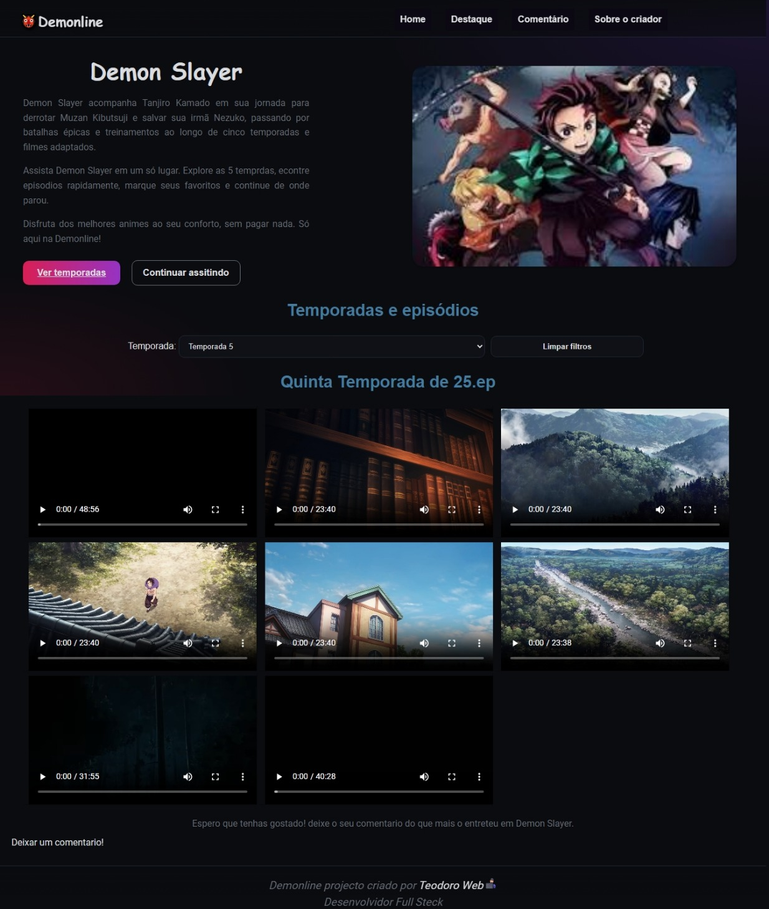
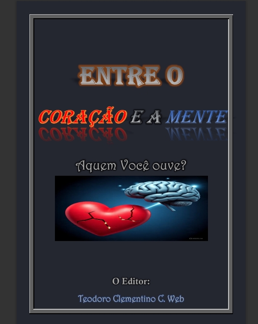

Desenvolvedor Web | Criativo | Apaixonado por Tecnologia
Sou um desenvolvedor apaixonado por criar experiências digitais incríveis. Tenho experiência em HTML, CSS, JavaScript e frameworks modernos. Gosto de aprender e compartilhar conhecimento.

Plataforma para assistir todas as temporadas do anime Demon Slayer.
Ver Projeto
Livro atraente e com conteudos que vale apenas lê.
Ver Projeto